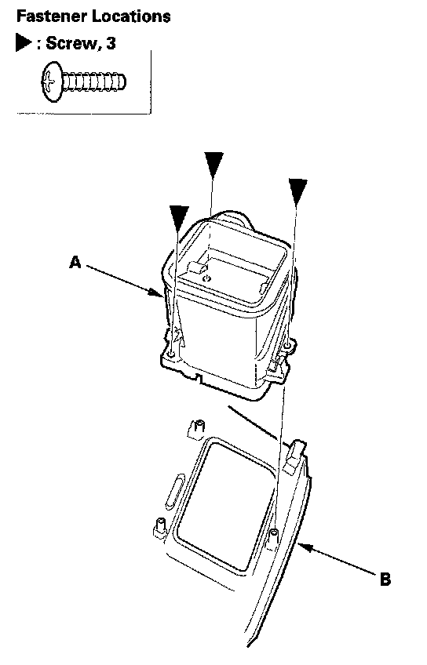
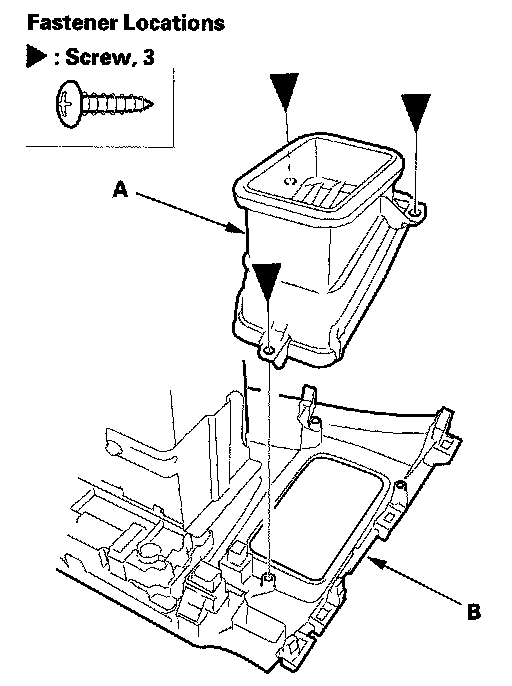
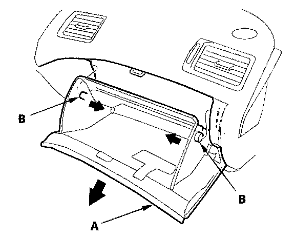
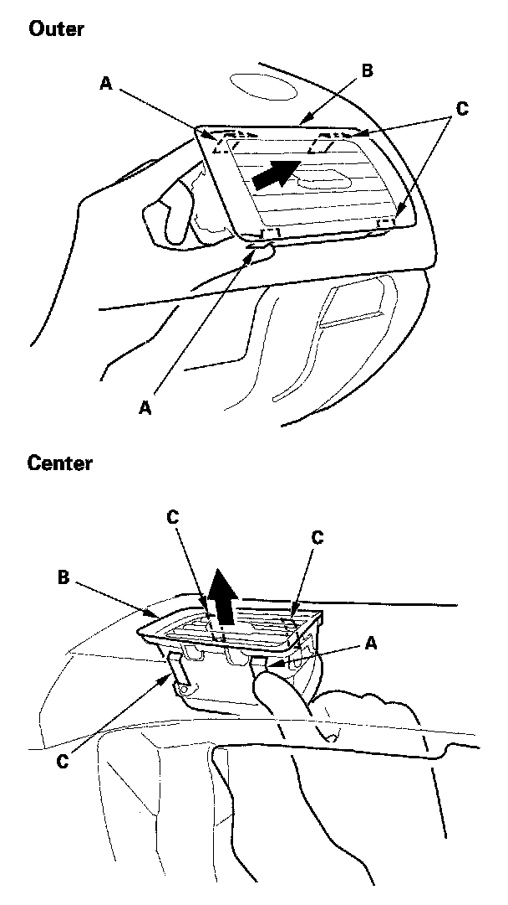

Dashboard Vent
Dashboard Vent Removal/InstallationSpecial Tools Required
KTC trim tool set SOJATP2014 *
* Available through the American Honda Tool and Equipment Program
Driver's Outer Vent
NOTE: Take care not to scratch the dashboard and related parts.
1. Remove the subdisplay visor.

2. Remove the screws securing the driver's outer vent (A), then remove the driver's outer vent from the subdisplay visor (B).
3. Install the outer vent in the reverse order of removal.
Driver's Center Vent
NOTE: Take care not to scratch the dashboard and related parts.
1. Remove these items:
- Navigation unit, with navigation system
- Audio unit, without navigation system

2. Remove the screws securing the driver's center vent (A), then remove the driver's center vent from the center panel (B).
3. Install the center vent in the reverse order of removal.
Passenger's Vent
SRS components are located in this area. Review the SRS component locations, precautions and procedures before doing repairs or service.
NOTE:
- Take care not to scratch the dashboard and related parts.
- Use the appropriate tool from the KTC trim tool set to avoid damage when prying components.
- Put on gloves to protect your hands.

1. While holding the glove box (A), release the glove box stop (B) on each side from the dashboard by pushing them inside.

2. Push on the side hooks (A) by hand to release them. Gently pull out the side vent (B) to release the other hooks (C), then remove the passenger's vent.
3. Install the passenger's vents in the reverse order of removal.